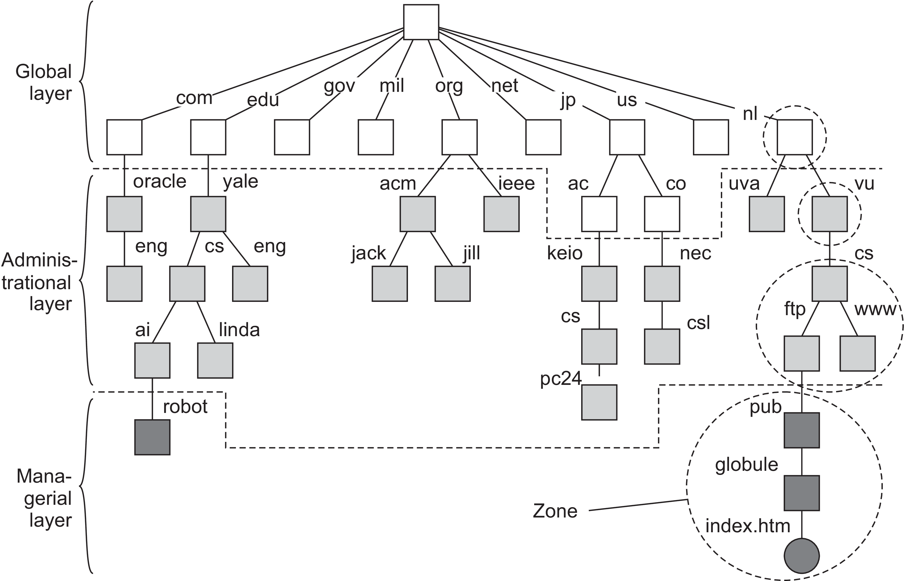
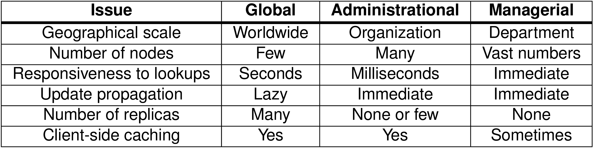
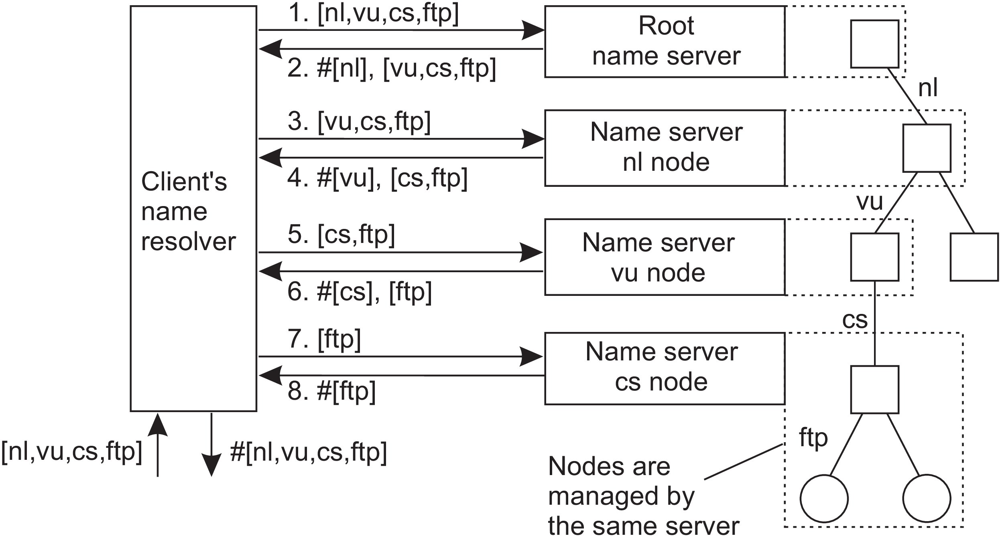
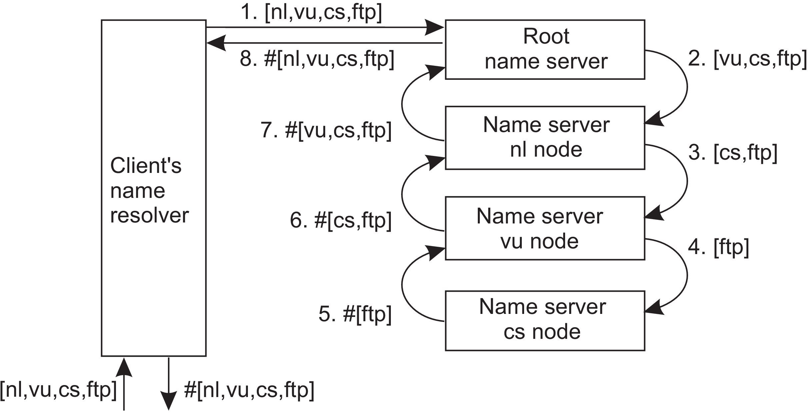
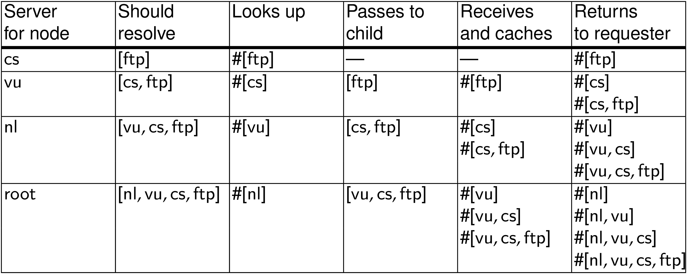
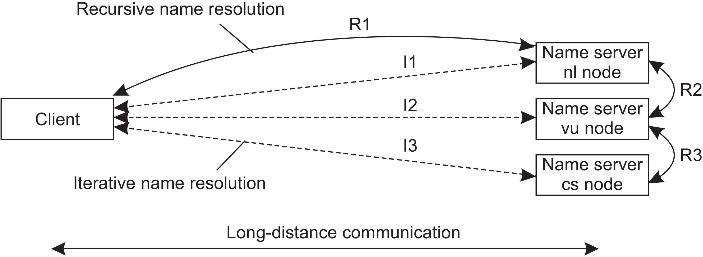
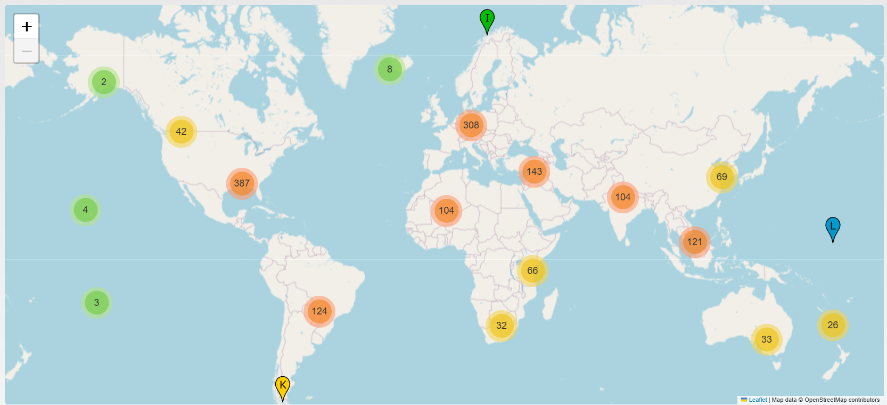

Do identificador ao nome hierárquico, árvores e leitura reversa de FQDN.
O que o DNS resolve, camadas Global, Administrativa e Gerencial, e comparativo.
Resolução Iterativa vs. Recursiva, papel vital do Cache e custo de comunicação.
Servidores raiz mundiais, Anycast, protocolo UDP e robustez na Web.
Identificadores como IP, CPF ou códigos internos são precisos para sistemas computacionais, mas nem sempre são amigáveis para a memória humana.
A nomeação estruturada organiza nomes em uma hierarquia lógica, permitindo que pessoas localizem recursos por caminhos intuitivos e ordenados.
/home/user/unicap/arq-sistemas/aulas/aula11.pdf
/) até a folha (aula11.pdf).A hierarquia reduz ambiguidade: cada etapa do caminho restringe progressivamente o conjunto possível de resultados.
www.c3.unicap.br
br → unicap → c3 → www.O DNS utiliza essa estrutura para mapear nomes legíveis em endereços IP de destino na rede.
O Domain Name System (DNS) realiza resolução de nomes: dado um nome legível por humanos, retorna o endereço IP do servidor responsável pelo serviço.
google.com.br ou unicap.br.O usuário recorda o nome com facilidade; a infraestrutura distribuída descobre o endereço IP correto de forma transparente e tolerante a mudanças de provedor ou datacenter.
., gTLDs como .com, .org e ccTLDs como .br, .nl).
unicap.br, uol.com.br, globo.com, vu.nl).
Essa partição tripla organiza o DNS tanto em termos de autoridade administrativa quanto de requisitos técnicos de desempenho e cache.

| Critério | Global | Administrativa | Gerencial |
|---|---|---|---|
| Escala Geográfica | Mundial | Por Organização | Por Depto / Prédio |
| Qtd. de Nós | Poucos (dezenas) | Muitos (milhares) | Vasto (milhões) |
| Responsividade | Segundos (c/ cache) | Milissegundos | Imediata (< ms) |
| Propagação Updates | Lenta (horas/dias) | Rápida (seg/min) | Imediata |
| Número de Réplicas | Muitas | Algumas (2 a 3) | Poucas / Nenhuma |
| Caching é Efetivo? | Sim, essencial! | Sim | Raramente / Sob demanda |
A camada global tem poucos nós e escopo mundial; a administrativa atende cada organização; a gerencial lida com o volume massivo de mudanças diárias.

Se a camada global pode tolerar respostas mais lentas, por que um site famoso costuma abrir em menos de 1 segundo?
Porque consultas anteriores ficam em cache tanto no cliente quanto nos servidores resolvedores locais (ISP/campus), evitando repetir a travessia completa da hierarquia a cada clique.
Resolver o caminho: ftp://ftp.cs.vu.nl/pub/globe/index.html até obter o endereço IP do servidor responsável.
Quem deve gastar processamento e manter estado aberto durante a resolução: o cliente/resolver local ou a cadeia de servidores intermediários?
.)..nl..nl e recebe referência de vu.nl.cs.vu.nl) e obtém o IP.O cliente (ou resolvedor local) controla o passo a passo de cada salto da travessia. Os servidores apenas respondem "não sei o IP final, mas pergunte a fulano".

ftp.cs.vu.nl, o cliente guarda em sua tabela de cache local as referências dos servidores intermediários (.nl, vu.nl, cs.vu.nl).mail.cs.vu.nl, o cliente pode cortar caminho e começar a consulta a partir do servidor de cs.vu.nl já conhecido!A raiz DNS tende a ser consultada muito poucas vezes para domínios acessados com frequência, pois o cache reaproveita respostas anteriores de forma extremamente eficiente.
O cliente faz menos trabalho direto; os servidores assumem a coordenação, mantendo conexões ativas até obter a resposta final.


O cliente final faz consulta recursiva ao seu resolvedor local (ISP ou 8.8.8.8), e o resolvedor local executa resolução iterativa com os servidores raiz e autoritativos mundiais.

cs.vu.nl)
UDP Porta 53
Existem 13 identidades lógicas de servidores raiz (de a.root-servers.net até m.root-servers.net), mantidas por 12 operadoras globais independentes.
Embora existam apenas 13 endereços IP conceituais, há mais de 1.700 instâncias físicas espalhadas pelo mundo respondendo pelos mesmos IPs via roteamento Anycast BGP!

A fantástica escalabilidade global do DNS depende da combinação harmoniosa entre hierarquia estrita, replicação estratégica (Anycast) e cache agressivo em múltiplas camadas.
Nomes fornecem uma abstração estável, expressiva e memorável para o usuário; o DNS transforma com elegância essa abstração em localização física de rede de maneira resiliente, descentralizada e globalmente escalável.